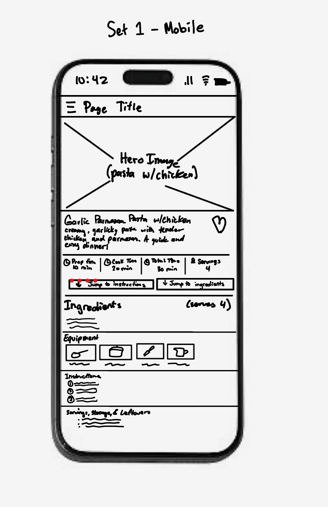
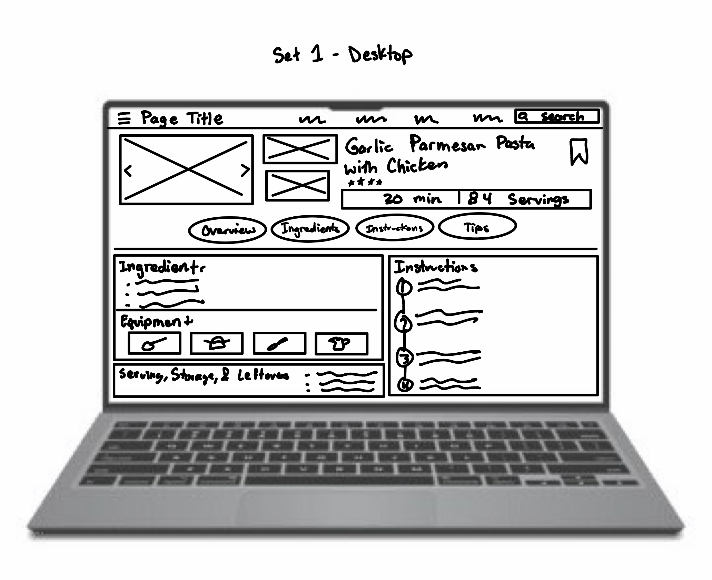
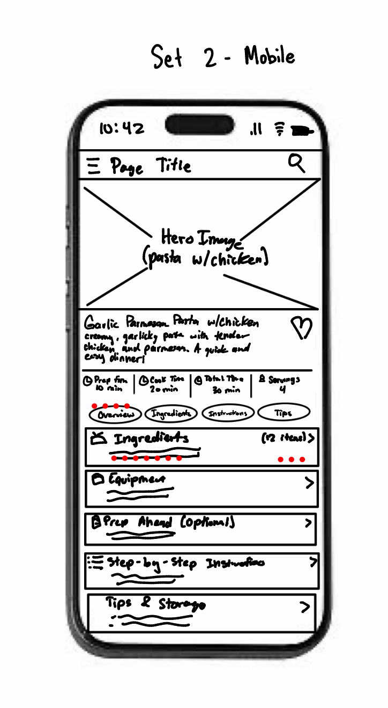
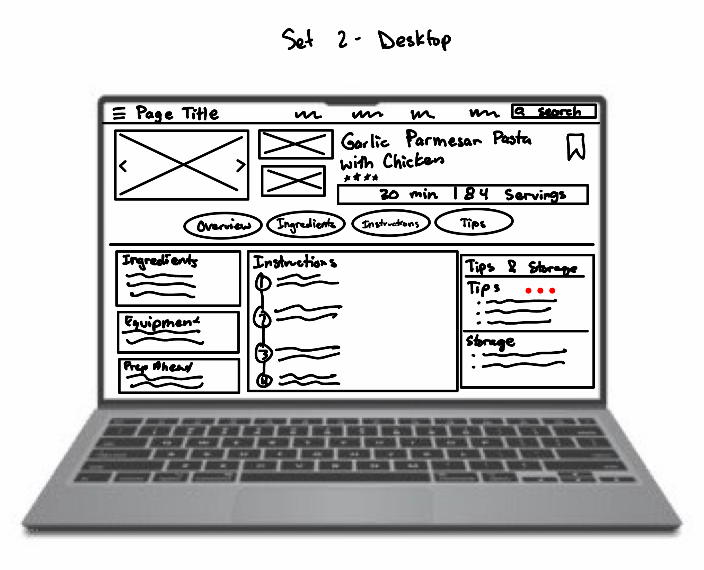

Recipe Page Low-Fidelity Prototypes
Garlic Parmesan Pasta with Chicken
Prototype Set 1
This concept uses a more traditional recipe-page layout with large food imagery followed by recipe information, ingredients, equipment, instructions, and storage information.


Prototype Set 2
This concept takes a more modular and task-oriented approach, organizing recipe information into distinct sections and cards that make ingredients, preparation, cooking steps, and storage information easy to scan.

